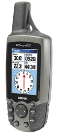

Garmin GPSMAP 60CS
maandag 19 juli 2004 | Gadgets
Het was alweer een tijdje geleden dat ik mijn spaarboek had geplunderd om een nieuw hebbeding te bekostigen (sinds mijn dual G5 een paar maand geleden – kuch, hoest). Daar moest vanzelfsprekend dringend iets aan gebeuren.
Mijn nieuwste speelgoed is een draagbaar GPS toestel mét hoogtemeter en elektronisch kompas. Ik heb me de laatste weken zorgvuldig gedocumenteerd (winkels, fora, websites) over verschillende merken en types. Na wat aanvankelijk getwijfel, heb ik uiteindelijk gekozen voor de Garmin GPSMAP 60CS. Alles online besteld bij ASPID Export (wat een prijzen!), en twee dagen later stak een kleine bruine doos in de brievenbus.
Toegegeven, dit topmodel van Garmin is niet goedkoop, maar je kent dat, hé: altijd het beste materiaal willen kopen… Ik wou geen compromissen sluiten, om dan tijdens een bergwandeling bedrogen uit te komen door een toestel met gebrekkige functionaliteit en/of kwaliteit.
Ik heb intussen al een weekje kunnen spelen met de Garmin, en moet toegeven dat het toestel tot meer in staat is dan ik ooit had gedacht (zowel qua nauwkeurigheid, betrouwbaarheid en gebruiksgemak). Zo heb ik ontdekt dat mijn wagen 5km/u te snel aangeeft op de wijzerplaat, waardoor ik mijn aangepaste snelheid in de bebouwde kom nu gevoelig heb kunnen opdrijven ;-) Ik ben benieuwd wat de meerwaarde van het toestel zal zijn volgende week, wanneer ik naar Toscane vertrek, of nog eens twee weken later, in de woestenijen van de Spaanse Pyrenëeen.
Dit zijn de belangrijkste redenen waarom ik voor de GPSMAP 60CS heb gekozen:

- alleskunner: zowel als echte wagen-GPS (routebegeleiding) als voor bergtochten, fiets, natuuronderzoek, …
- hoogtemeter en elektronisch kompas
- 30 uur met één stel AA-batterij’tjes — goed voor een klein weekje in de bergen
- uitstekende ontvangst (in tegenstelling tot andere Garmin toestellen, zoals de eTrex-reeks en andere)
- mogelijkheid om topografische kaarten in te laden, zoals de Topografische Atlas van België van het NGI of specifieke topokaarten van de Alpen
- mogelijkheid tot inlezen (en omgekeerd!) van afgelegde routes (en hoogtes) op PC — geen Mac :-(
- fraaie ultra-goed leesbare kleurendisplay (handig voor topografische kaarten)
- compact, 190 gram, hangt comfortabel aan de broeksriem
Jef Pober op 19 juli 2004
en zijn er ook spelletjes meegeleverd? :p